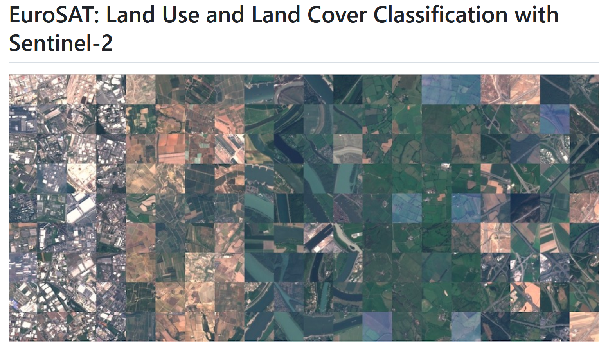
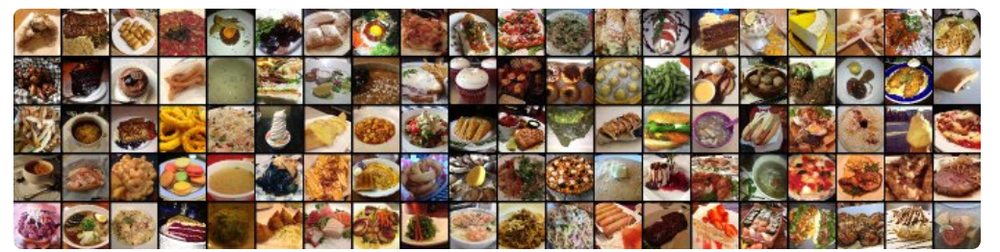
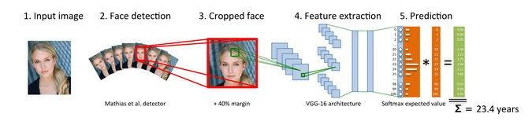
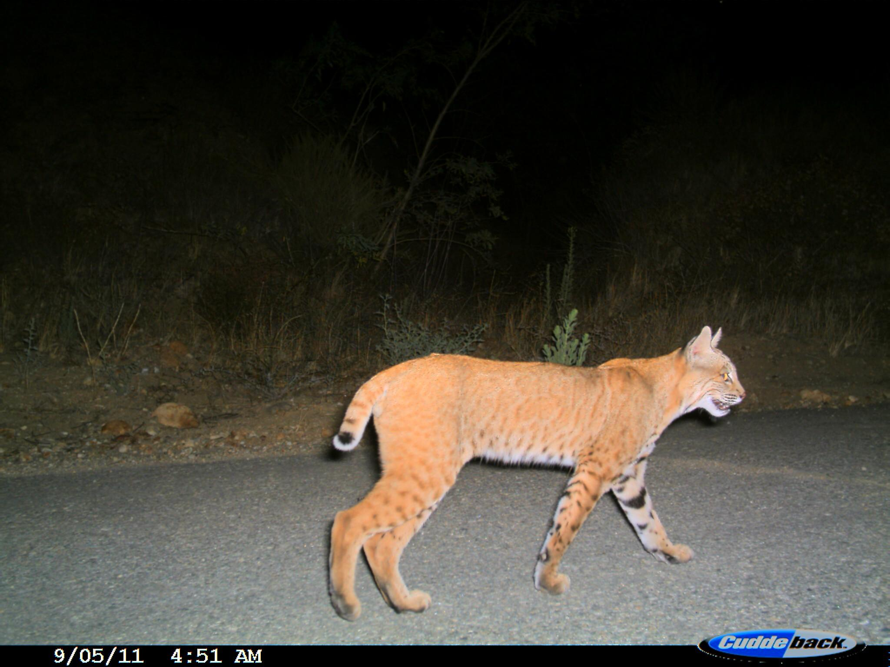
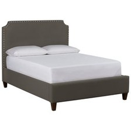
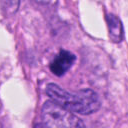
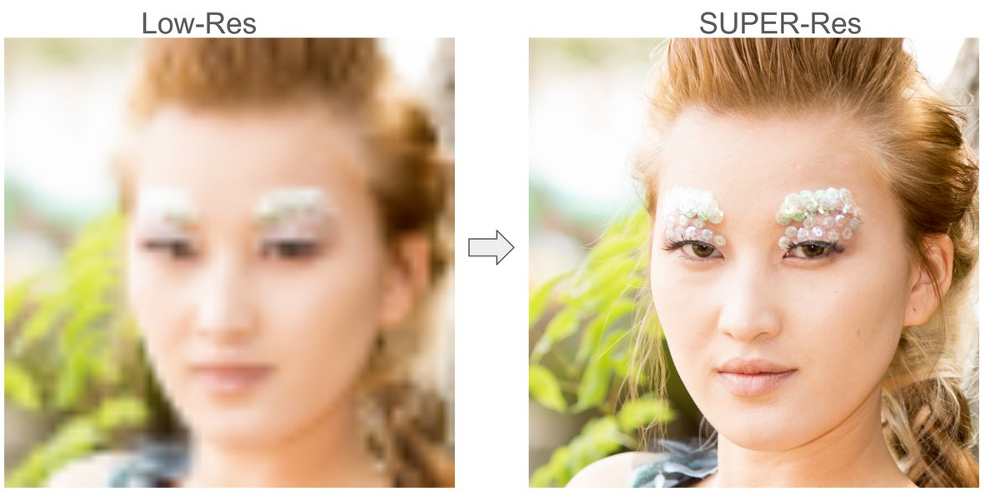
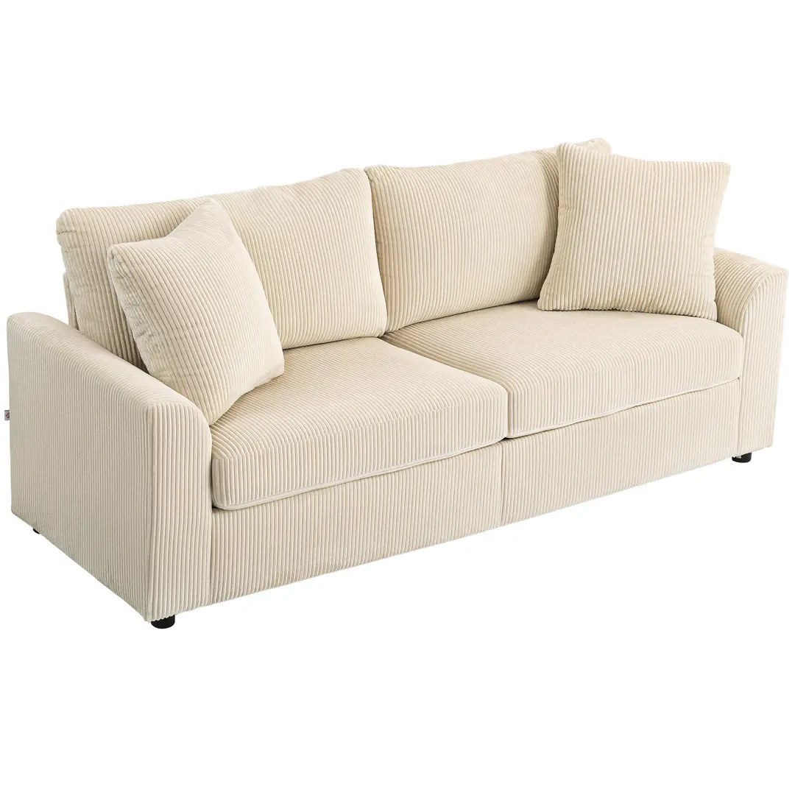

Project Ideas
The following project ideas provide potential starting points for projects. Feel free to propose your own topic.
1 Available Datasets
The following datasets are well-suited for project work. Size and task type vary considerably — choose a dataset that matches your available compute and the scope of your project.
| Dataset | Task Type | Size | Notes |
|---|---|---|---|
| EuroSAT RGB | Classification | ~27k images, 10 classes | 64×64 px, domain shift from ImageNet |
| Microsoft Cats vs Dogs | Binary Classification | ~25k images | Large, clean, balanced |
| Concrete Cracks | Binary Classification | ~40k images | Industrial defect detection |
| Food-101 (subset) | Classification | ~10k (10 classes) | Noisy labels, large full dataset |
| CCT20 | Classification | 1,600 images, 8 classes | Small course subset; larger full dataset available |
| Snapshot Serengeti | Classification | ~2.6M images, 48 classes | Large-scale; use a curated subset |
| Amazon Berkeley Objects (ABO) | Image Retrieval | ~25k images, 6 categories | Multi-view per item |
| DeepFashion (In-Shop) | Image Retrieval | ~3,300 images, 5 classes | Item-level train/test splits |
| AMI-Br | Binary Classification | Small (histopathology patches) | Domain shift; suited for LoRA/PEFT |
| FFHQ | Super Resolution | Up to 70k face images | Aligned faces, narrow domain |
| CLIC | Super Resolution | ~2k high-res photographs | Diverse scenes; train on crops |
Snapshot Serengeti is large, work with a curated subset and account for class imbalance in your evaluation (F1, weighted metrics, confusion matrices). AMI-Br is intentionally small and best suited for parameter-efficient fine-tuning experiments. MNIST is available but too simple to constitute a meaningful project. Additional camera trap datasets can be found at LILA BC.
Use the provided helper script to download a curated subset. It handles metadata parsing, MegaDetector filtering, resumable downloads, and includes make_splits() and compute_class_weights() utilities for your training pipeline.
curl -O https://marco-willi.github.io/cas-dl-compvis-lectures-hs2026/assets/datasets/download_ser.py
pip install pandas requests Pillow
python download_ser.pyEdit the configuration block at the top of the script to select species and image counts. The first run builds a local catalogue (~1 min); subsequent runs load the cache and go straight to downloading.
Important: the empty class has ~644k frames. If you include it, set CLASS_COUNTS explicitly — proportional sampling will otherwise produce a dataset that is ~80% empty.
2 Classification Projects
2.1 Image Classification: EuroSAT Land Use and Land Cover Classification
Goal: Develop a model to classify satellite images. You should consider RGB images and images with 13 spectral bands (see wiki) in modeling. There are 10 classes and 27,000 images.
Approach: Investigate various model architectures and decide what works best. Compare pre-trained models with those you train from scratch. Use appropriate data augmentation techniques. Since the dataset is relatively small, you should be careful of overfitting and robustly compare different models. Use RGB-only models for simplicity.
Focus: Compare different pre-trained models (foundation models) and a model trained from scratch.
Dataset: The two datasets can be found here: https://github.com/phelber/eurosat. There is a dataset in RGB format and a dataset with 13 spectral bands.

Difficulty/Effort: Low - Medium
2.2 Image Classification: Food Images
Goal: Develop a model to classify images of food. Pick 10 food classes (≈10k imgs)
Approach: Use pre-trained (foundation) models.
Focus: Compare different models, including CLIP zero-shot learning, and a DINO variant. Investigate how DINO improves with more labels.
Dataset: The dataset can be found here: https://data.vision.ee.ethz.ch/cvl/datasets_extra/food-101/, see Bossard et al. (2014). It is 5 GB.

Difficulty/Effort: Low - Medium
2.3 Age Estimation from Faces
Goal: Predict apparent age from images of faces.
Approach: Train a CNN as a 101-class classifier (ages 0 to 100) and convert class probabilities to a numeric prediction via the softmax expected value (see paper, Rothe et al. (2015)). Compare against direct regression (single output).
Focus: Compare at least two variants: a CNN defined and trained from scratch and a pre-trained model with fine-tuning / as feature-extractor. Analyse the errors.
Dataset: The dataset can be found here Link. Use a small dataset with cropped faces, e.g. Link.

Difficulty/Effort: Medium - High
2.4 Wildlife Camera Trap Classification
Goal: Build a classifier for camera-trap images of wildlife. Choose either CCT20 (8 classes, 1,600 images in the course subset) or Snapshot Serengeti (48 species, ~2.6M images — use a curated subset).
Approach: Start with a pretrained backbone as a feature extractor. Address class imbalance using weighted loss or oversampling strategies. Compare at least two pretrained model families and evaluate the effect of fine-tuning vs. feature extraction.
Focus: Effect of class imbalance on standard metrics — accuracy can be misleading when one class dominates. Report F1 per class and analyse the confusion matrix: which species are most often confused, and why?
Dataset: CCT20 course subset (8 classes, 1,600 images); the full Caltech Camera Traps dataset is available at LILA BC. Snapshot Serengeti (48 classes, ~2.6M images) is available at LILA BC — the full dataset is large; selecting a balanced subset of 10–15 species is recommended. Additional camera trap datasets can be found at LILA BC.

Difficulty/Effort: Low - Medium
2.5 Industrial Surface Defect Detection
Goal: Train a binary classifier to distinguish intact from cracked concrete surfaces, and reason carefully about the precision–recall trade-off in a safety-critical setting.
Approach: Use the Concrete Cracks dataset (~40k images). Fine-tune a pretrained model and evaluate performance across different decision thresholds. In safety-critical applications, false negatives (missed cracks) carry higher cost than false positives — make this trade-off explicit in your analysis.
Focus: Threshold selection and the precision–recall curve. Qualitative failure analysis: what does the model get wrong, and does it fail systematically?
Dataset: Concrete Cracks dataset (Mendeley Data, CC BY 4.0), see Özgenel (2019).
Difficulty/Effort: Low - Medium
2.6 Product Image Retrieval
Goal: Build an image retrieval system that, given a query product image, returns the top-k most visually similar items from a gallery using learned embeddings.
Approach: Extract embeddings from a pretrained CNN or ViT backbone. Build a nearest-neighbour index with cosine similarity. Evaluate with precision@k and recall@k. Compare at least two backbone architectures to assess how embedding quality affects retrieval.
Focus: How does the choice of backbone — and whether it is fine-tuned or used frozen — affect retrieval quality? Qualitative inspection of failure cases is particularly informative here.
Dataset: Amazon Berkeley Objects (ABO) Furniture (~25k images, 6 categories) or DeepFashion In-Shop Retrieval (~3,300 images, 5 classes). The multi-view structure of ABO makes retrieval evaluation especially natural; DeepFashion provides item-level train/test splits.

Difficulty/Effort: Low - Medium
2.7 Histopathology Fine-Tuning with LoRA
Goal: Apply parameter-efficient fine-tuning to adapt a pretrained Vision Transformer to a medical imaging task — specifically, classifying normal vs. atypical mitotic figures in histopathology patches.
Approach: Use a HuggingFace ViT backbone and apply LoRA adapters (rank 4–16). Compare three settings: frozen backbone (feature extractor), LoRA fine-tuning, and full fine-tuning. Discuss the domain shift from natural images (ImageNet pretraining) to H&E-stained histopathology patches.
Focus: Parameter count vs. performance trade-off; convergence speed across settings; domain shift as a factor in choosing fine-tuning strategy. Because the dataset is small, report results across multiple random seeds.
Dataset: AMI-Br (128×128 histopathology patches, binary labels). The dataset is intentionally small — robustness to seed variation is part of the analysis.

Difficulty/Effort: High
3 Image-to-Image Projects
3.1 Super Resolution
Goal: Develop a model that converts a low-resolution image into a higher resolution (e.g. 4× upscaling).
Approach: Define an image-to-image architecture and train it on suitable data. You can assume fixed input and output resolutions. Create training pairs by downsampling high-resolution images. Implement SRCNN (Dong et al. 2015) as a baseline and test your own variations of the architecture (e.g. deeper networks, residual connections, learned upsampling instead of bicubic pre-upsampling).
Focus: Compare against bicubic interpolation as a trivial baseline. Evaluate with PSNR and SSIM, and inspect the results visually: which details does the model recover, and where does it produce blurry or wrong structures? Discuss the limits of pixel-wise losses (e.g. MSE) for perceived image quality.
Finally, compare your best model against one or two API-based generative upscalers on a small test set (e.g. 20–50 images), e.g. an image editing model prompted to upscale the image, or a diffusion-based upscaler via Replicate / fal.ai. These models typically produce sharper, more pleasing images, but are the added details faithful to the original? Compare PSNR/SSIM with a perceptual metric (e.g. LPIPS) and look for hallucinated details (e.g. changed facial features, invented text or textures).
Dataset: Choose one of the following:
- Faces: FFHQ (Link), up to 70,000 aligned face images. The narrow domain makes the task easier and is a good starting point.
- Diverse photographs: the CLIC dataset (Link) of the Challenge on Learned Image Compression (for example this subset), containing high-resolution professional and mobile phone photographs of varied scenes (landscapes, architecture, people, objects). The images are large, so train on random crops (patches). The diversity makes the task harder and is better suited to evaluate generalisation. Optionally, train on FFHQ and test on CLIC (or vice versa) to analyse domain shift.

Difficulty/Effort: Medium
4 Generative Projects
These projects build a workflow around existing generative models, no training required. Using an image generation API (e.g. Gemini, OpenAI, or FLUX via Replicate / fal.ai) is fine and recommended, as it avoids GPU setup. Generating a few nice images is easy. The real work is defining what “good” means, measuring it, and comparing variants systematically.
AI coding assistants may be used for the implementation (API calls, pipeline, evaluation scripts). This frees time for workflow design and evaluation, which is where the focus of these projects lies. Fix the experimental grid (inputs × variants × repetitions) in advance and estimate the number of API calls and cost before you start.
4.1 Product Images in Different Environments
Goal: Design a workflow that takes one or more source images of a product (e.g. a chair on a white background) and generates images of the same product in different environments (e.g. living room, office, terrace). The product must stay recognisably the same: shape, colour, material and proportions must not change.
Approach: Build and compare three variants:
- Editing model: an image editing model via API with a fixed prompt template, e.g. “Place this chair in a bright Scandinavian living room”.
- Multiple views: the same, but with 2–3 source views of the product as input. Does more context improve fidelity?
- Cut-out + compositing: segment the product (e.g. background removal or SAM), keep its pixels fixed, and only generate the background (inpainting / outpainting). This guarantees fidelity, but does the result still look realistic?
Optionally, compare two different models or prompt formulations for the best variant.
Focus:
- Product fidelity: embedding similarity (DINO or CLIP) between the source product and the product region in the generated image.
- Prompt adherence: does the scene match the requested environment? E.g. CLIP zero-shot classification over the environment names.
- Realism and overall quality: a vision-language model as judge (e.g. a fixed rubric with scores 1–5), validated against your own ratings on a subset. How well do the judge and you agree?
- Failure analysis: when does the product change (geometry, colour, texture)? Are scale, perspective and shadows plausible? Break down all metrics by product category and environment: which products and scenes are systematically hard?
Dataset: 50–100 products from Amazon Berkeley Objects (ABO), which provides multiple views per item, and a fixed list of 5 environments (several hundred generated images in total). Choose the products to be diverse: different categories (e.g. chairs, sofas, tables, lamps, rugs, shelves), sizes, and deliberately difficult cases such as thin structures, glass, reflective metal, patterned fabric, or text and logos. Run small pilot experiments on a few products first, then scale up the final comparison.

Difficulty/Effort: Medium - High
4.2 Food Images for a Fictional Delivery Service
Goal: Create a visually consistent menu for a fictional food delivery service using generative AI. All dish images should share a common look & feel (e.g. background, lighting, camera angle, plating), while accurately representing the dishes and their ingredients. Compare two approaches: a) generating images from text descriptions, and b) transforming existing food photographs into the desired style.
Approach: Select 8–12 diverse dishes and define a target visual style using a short style guide and 1–2 reference images. Implement and compare:
- a) Text-to-image: Generate menu photographs from dish names and short ingredient descriptions. Compare a consistent prompt template with reference-guided generation (if supported by the model).
- b) Image editing: Transform existing food photographs into the target style while preserving the original dishes. Experiment with different instructions or editing strengths to investigate the trade-off between content preservation and style consistency.
Use a common image-generation API for both scenarios where possible. Coding agents can assist with API integration, prompt templates and creating comparison grids.
Focus:
- Content correctness: Does the generated image represent the intended dish? Are important ingredients preserved, missing or invented?
- Style consistency: Do the resulting images look like they belong to the same food delivery service? Compare the images side by side.
- Generation vs. editing: Which approach produces more consistent images? Which better preserves dish-specific details?
- Evaluation: Create a visual comparison grid and use simple manual ratings (e.g. 1–5 for content correctness and style consistency). Optionally compare these assessments with a vision-language model.
- Failure analysis: Identify representative failures and investigate which dishes or visual characteristics are particularly challenging.
Dataset: Curate 8–12 diverse dishes using photographs from Wikimedia Commons, Food-101 or your own photographs. Include soups, salads, main courses and desserts, ideally with different backgrounds, lighting conditions and camera angles. Write a short menu description and identify the key ingredients for each dish. Start with 2–3 dishes to test the workflow before processing the full collection.
Deliverable: A small, visually consistent menu gallery, a side-by-side comparison of original, generated and edited images, and a short evaluation of the methods, trade-offs and typical failures.
Difficulty/Effort: Medium
5 Research Projects
These projects investigate an open question rather than solve an application problem. The question can come from anywhere: a claim in a recent paper, an untested idea, or an observation about how a model or method behaves. The focus is on careful experimental design and honest analysis. The outcome is open: a carefully executed negative result is as valuable as a positive one.
5.1 Does MatryoshkaLoRA Transfer to Vision Transformers?
Goal: MatryoshkaLoRA (arXiv:2605.07850) is a recent variant of LoRA that learns a nested hierarchy of low-rank adapters: after training, the adapter can be truncated to any rank \(k \leq R\) without retraining. On LLM benchmarks (Llama 3, GSM-8K, ARC-C, HellaSwag) the authors report not only good accuracy at truncated ranks, but also gains of 1–4 percentage points over standard LoRA at full rank. The method has not been evaluated on vision models. Your task is to find out whether these claims hold when fine-tuning a vision transformer for image classification.
Background: Standard LoRA computes \(\mathbf{W}_0 + \mathbf{A}\mathbf{B}\) with a fixed rank \(R\). MatryoshkaLoRA inserts a fixed diagonal scaling between the adapters, \(\mathbf{W}_0 + \mathbf{A}\,\mathrm{diag}(\mathbf{p})\,\mathbf{B}\), where \(\mathbf{p}\) up-weights the leading rank components (e.g. \(\mathbf{p} = [4,3,2,2,1,1,1,1]\) for \(R=8\) and nested ranks \(\{1,2,4,8\}\)). This way every sub-rank receives a training signal in each step. At inference, \(\mathbf{p}\) is dropped and the first \(k\) components are used. Official code: IST-DASLab/MatryoshkaLoRA.
Approach: Use a DINOv3 backbone (ViT-S/16 or ViT-B/16) loaded via timm (e.g. timm.create_model("vit_small_patch16_dinov3.lvd1689m", pretrained=True), no HuggingFace account required) with a linear classification head. Establish a frozen-backbone (linear probe) baseline first. Then compare standard LoRA and MatryoshkaLoRA (and optionally DyLoRA) at a maximum rank of e.g. \(R=32\). Evaluate MatryoshkaLoRA truncated to ranks \(\{1, 2, 4, 8, 16, 32\}\) and compare against standard LoRA models trained separately at a subset of these ranks.
Focus:
- Fair comparison: the scaling vector \(\mathbf{p}\) changes the effective learning rate. Tune the learning rate separately for each method (a small grid suffices), otherwise you may measure a learning-rate effect rather than a method effect.
- Headroom: if the linear probe is already close to the ceiling, there is nothing to gain from fine-tuning. Choose a dataset with domain shift (e.g. AMI-Br) or reduce the training set (e.g. 10–50 images per class) to create headroom.
- Statistical robustness: the reported gains are small. Use at least 3 seeds and report mean ± standard deviation.
- Rank–accuracy curve: plot accuracy over rank for both methods. Does a single MatryoshkaLoRA run match separately trained LoRA models at each rank?
Dataset: At least two datasets from the table above. AMI-Br (domain shift, small) combined with a natural-image dataset (Food-101 subset, Snapshot Serengeti subset, or CCT20) is a good pairing.
AI coding assistants may be used for the implementation — this keeps the project manageable and shifts the focus to experimental design and analysis. You must, however, be able to explain how the scaling vector \(\mathbf{p}\) is constructed and why it produces a nested rank hierarchy. Keep the experimental grid small and fixed in advance (ranks × methods × seeds × learning rates) to avoid an explosion of runs.
Difficulty/Effort: High